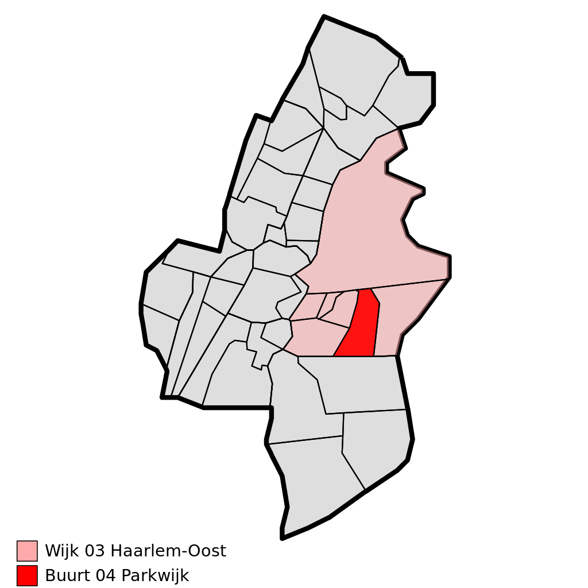
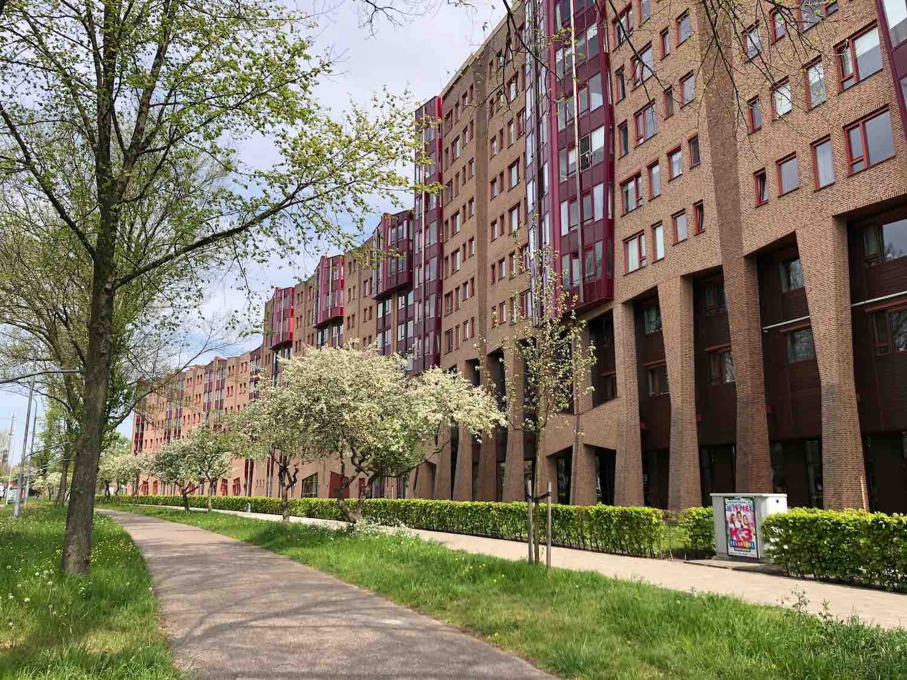

Parkwijk is een naoorlogse wijk in stadsdeel Oost van de stad Haarlem. De wijk heeft veel flats en veel nieuwbouw. Het is een ruim opgezette buurt met een groot park, het Burgemeester Reinaldapark.
Parkwijk ligt dicht bij de uitvalswegen richting Amsterdam en de A9. Het centrum van Haarlem ligt op een steenworp afstand van zo'n tien minuten fietsen. De wijk wordt gekenmerkt door veel flats, maar ook veel recente nieuwbouw. Het is een ruim opgezette buurt met veel groen en een groot park, het Burgemeester Reinaldapark. In Parkwijk wonen ongeveer 6.850 mensen, onder wie veel 65-plussers. Dat komt deels door het Reinaldahuis, een verzorgingshuis in de buurt. Parkwijk valt onder te verdelen in 3 kleinere buurten; De Architectenbuurt (van de Amsterdamsevaart tot en met aan de Bazellaan), De Kunstschildersbuurt (vanaf de Bazellaan tot aan het Mien Ruyspad). De buurt wordt vertegenwoordigd in de wijkraad Parkwijk/Zuiderpolder die zich huisvest in Wijkcentrum "de Sprong" (Het voormalig schoolgebouw van de Viersprong).


Wonen
Parkwijk is vooral gebouwd in de jaren 50 en 60 van de vorige eeuw. Parkwijk was toen gedeeltelijk bedoeld als woonschool, hiervoor werden in 1960 ten noorden van de Berlagelaan 62 eengezinswoningen rond 4 pleintjes (Blaauwplein, De Bordesplein, Sevenhuijsenplein en Van der Banplein) gebouwd, alsmede een centrum voor maatschappelijk werk en een buurtcentrum.
Voorzieningen
Veel huizen uit de originele bouwperiode waren verouderd en zijn inmiddels vervangen. Recente bouwprojecten zijn: Haarlemse School, Hof van Hendrik en de Groene Linten. De buurt bestond daardoor in 2014 voor ruim 20% uit nieuwe woningen. De buurt wordt gedomineerd door middenbouw: 7 van de 10 huizen zijn flats. 70% van de woningen is een sociale huurwoning; voor de herstructurering rond 1990 was dit nog 90%.
Voorzieningen
Parkwijk heeft centraal gelegen tussen de twee woonbuurten het kleinschalig buurtwinkelcentrum Zuiderpark liggen. Waar onder ander een DekaMarkt, kapper, toko, slager, Turkse winkels, bloemenkiosk, dierenwinkel, fietswinkel en veel meer te vinden zijn. Daarnaast huisvest Fit fabriek een sportschool direct tegenover het plein.
Verder profiteert de wijk van het grote stadspark, dat de wijk een groen karakter geeft. Parkwijk kent wat betreft onderwijs een dependance van de in de Zuiderpolder gelegen OBS de Zuiderpolder. Naast het Wijkcentrum is in mei 2016 een groene oase ontstaan, die toepasselijk "Oase Oost" wordt genoemd.
Werk en Inkomen
De buurt biedt zo'n 1800 arbeidsplaatsen bij 374 bedrijven voornamelijk in de maatschappelijke- en commerciële dienstensector. De percentages werkzoekenden, bijstandontvangers en arbeidsongeschikten zijn iets hoger dan in andere Haarlemse buurten. Door de lage arbeidsparticipatie blijven de inkomens gemiddeld achter bij die in de rest van de stad. Echter wordt er de laatste jaren veel aangedaan om de buurt leefbaarder, en sociaal veiliger te maken.